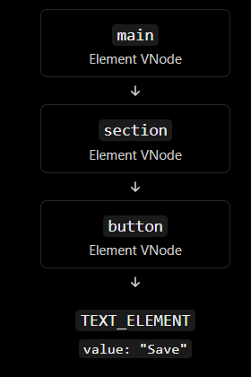
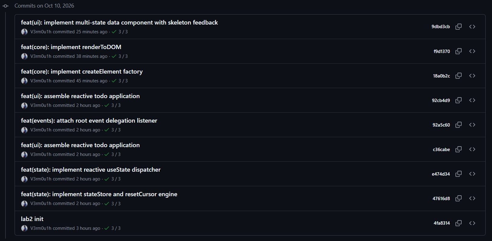

| GitHub Repository | MSIS207.R11.CTTT-static_web-v3r | | ChatGPT Conversation 1 | View chat
The objective of this project is to build a lightweight UI framework from scratch using vanilla JavaScript. The project explores how core frontend framework concepts work internally, including Virtual DOM creation, DOM rendering, state management, event delegation, and asynchronous UI updates.
Rather than relying on React or another UI framework, Mini-React implements its own foundational mechanisms and uses them to build reactive user interfaces.
The project includes the following features:
createElement() and createTextElement().renderToDOM().Mini-React is organized into separate modules, each responsible for a specific part of the UI lifecycle.
| Module | Responsibility |
|---|---|
createElement.js |
Creates structured Virtual DOM nodes. |
renderToDOM.js |
Converts VNodes into real DOM elements and text nodes. |
state.js |
Provides the state storage and update mechanism. |
useState.js |
Provides reactive state access where supported by the existing state engine. |
events.js |
Manages delegated event handling. |
app.js |
Implements the Task Manager application. |
asyncDataComponent.js |
Implements the asynchronous data state machine, request handling, and UI. |
asyncDataComponent.css |
Defines the skeleton animation and component styling. |
The asynchronous component reuses the existing Virtual DOM factory, renderer, and event-handling architecture instead of introducing another rendering system.

The createElement() factory converts element descriptions into a consistent VNode structure containing a type, props object, and children array.
Text values are converted into text VNodes. Nested child arrays are flattened, while valid VNodes are preserved. Null, undefined, and boolean children are ignored according to the factory contract.
The factory creates data structures only; it does not directly create browser DOM nodes.
The renderToDOM() function converts the VNode tree into real DOM nodes.
The renderer:
document.createTextNode().document.createElement().The state engine provides the foundation for reactive UI updates. The event delegation module allows supported event handlers to be managed through the existing event architecture instead of attaching separate native listeners to every child.
These mechanisms are reused by the application and the asynchronous data component where their established contracts permit.
The Task Manager demonstrates how the framework's state and event mechanisms can support a functional user interface.
The application supports task creation, completion, deletion, and filtering by All, Active, and Completed status. The interface updates in response to user interactions.
The asynchronous component manages data requests using exactly four UI states:
IDLE: The component is ready to request data.LOADING: The request is in progress and a skeleton is displayed.SUCCESS: Validated response data is displayed.ERROR: A human-readable error message and retry action are displayed.A central transition mechanism validates state changes. Each request receives a monotonically increasing identifier so that outdated responses cannot overwrite the result of a newer request.
The component also supports request cancellation where possible and invalidates outstanding work during disposal. Cancellation is not relied upon as the only protection against stale responses.
The response is validated before its fields are used. Empty valid responses are handled separately from malformed data.
Security is an important part of the Mini-React implementation.
Text values are rendered through text nodes instead of being parsed as HTML. The implementation does not use innerHTML to render untrusted response content.
For the security test, use the following literal string:
<script>alert(1)</script>
Expected result:
The VNode factory and renderer validate their inputs before creating DOM nodes. The asynchronous component validates response data before using its fields.
The component also avoids exposing stack traces or sensitive implementation details in user-facing error messages.
Automated tests are used to verify the Virtual DOM factory, renderer, and asynchronous component independently.
The factory tests cover:
Recorded result: 18/18 tests passed.
The renderer tests cover:
Recorded result: 12/12 tests passed.
The asynchronous component tests cover:
Recorded result: 10/10 tests passed.
Run the following commands from the project root:
node --experimental-default-type=module createElement.test.js
node --experimental-default-type=module renderToDOM.test.js
node --experimental-default-type=module asyncDataComponent.test.js
The recorded combined result is 40/40 automated tests passed.
The implementation considers accessibility in both the semantic DOM structure and the asynchronous component.
The component provides:
The component uses CSS for skeleton animation rather than JavaScript animation loops. The loading layout reserves space to reduce layout shifts.
Request identifiers protect the interface from out-of-order asynchronous responses. Request cancellation is used where available, while request identity remains the correctness mechanism.
The component does not introduce polling or require a backend for its demonstration. A mock data source can be used to test success, failure, and retry behavior deterministically.
Performance claims should be supported by measurements if numerical targets are reported.
The project is organized into implementation milestones to keep the work reviewable and reduce unrelated changes within commits.
The asynchronous component milestone uses the required commit message:
feat(ui): implement multi-state data component with skeleton feedback
The intended feature files are:
asyncDataComponent.jsasyncDataComponent.cssasyncDataComponent.test.jsasyncDataComponent.demo.htmlBefore committing, inspect the staged changes:
git status
git diff --cached
git show --stat --oneline HEAD
Only feature-related files should be included in the asynchronous component commit.

Capture the terminal showing the required commit message and the files included in the commit.
The current milestone focuses on the core UI architecture and resilient asynchronous rendering. The demo uses a mock data source and does not require a backend.
Potential future improvements include:
Virtual DOM reconciliation and a generalized diffing engine remain outside the scope of this milestone.
This project demonstrates how foundational UI framework features can be implemented using vanilla JavaScript. The Virtual DOM factory, recursive renderer, state engine, event delegation system, Task Manager, and resilient asynchronous data component provide a modular foundation for building reactive user interfaces.
The asynchronous component adds explicit state transitions, loading feedback, safe response rendering, accessible error recovery, request identity, and lifecycle cleanup.
The recorded automated tests provide evidence for the factory, renderer, and asynchronous component contracts. Browser screenshots and DevTools inspection should be included to complete the visual and integration evidence.